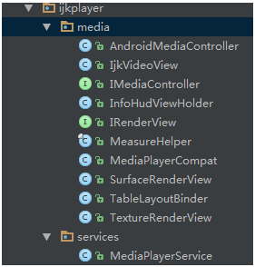

简介
弹幕视频网 Bilibili（B 站）在 GitHub 网站上建立了开源工作组（BOSTF），用以分享与维护自己的开源项目，其中包括 DanmakuFlameMaster（燃烧吧！烈焰弹幕使）与 ijkplayer。前者是免费提供 Android 平台下应用弹幕集成的解决方案，而后者则提供 Android 和 iOS 双平台视频播放器的解决方案。
作为国内首屈一指的弹幕视频网站，B 站的两个开源项目已经被多个 App 使用。其中美拍和斗鱼使用了 ijkplayer 项目，DanmakuFlameMaster 项目则被包括优酷土豆、开迅视频、MissEvan、echo 回声、斗鱼 TV、天天动听、被窝声次元、ACFUN 等 App 使用。
特性
ijkplayer，基于 ffplay 的跨平台播放器，实现了跨平台功能，API 易于集成；编译配置可裁剪，方便控制安装包大小；支持硬件加速解码，更加省电
项目地址： https://github.com/Bilibili/ijkplayer
使用
编译
1
2
3
4
5
6
7
8
9
10
11
12
| git clone https://github.com/bbcallen/ijkplayer.git
cd ijkplayer-android
git checkout -B latest k0.5.1
./init-android.sh
cd android/contrib
./compile-ffmpeg.sh clean
./compile-ffmpeg.sh all
cd ..
./compile-ijk.sh all
|
上面是从github上面直接复制来的，到这里，编译好了，我们就可以直接复制到项目里面用了。上面编译之所以加上all是因为我们不止编译某一个平台下的so，当然如果你要编译某一个平台的so(如arm64)，那么把
1
2
3
| ./compile-ffmpeg.sh all
cd ..
./compile-ijk.sh all
|
换成
1
2
3
| ./compile-ffmpeg.sh arm64
cd ..
./compile-ijk.sh arm64
|
就行了
使用
如果你没有什么特殊需求的话，也可以直接添加官方依赖：
1
2
3
4
5
6
7
8
9
10
11
12
| # 必要的，必须导入
compile 'tv.danmaku.ijk.media:ijkplayer-java:0.5.1'
compile 'tv.danmaku.ijk.media:ijkplayer-armv7a:0.5.1'
# 同平台的链接库，根据需要可以适当删除
compile 'tv.danmaku.ijk.media:ijkplayer-armv5:0.5.1'
compile 'tv.danmaku.ijk.media:ijkplayer-arm64:0.5.1'
compile 'tv.danmaku.ijk.media:ijkplayer-x86:0.5.1'
compile 'tv.danmaku.ijk.media:ijkplayer-x86_64:0.5.1'
# 这个是一个MediaPlayer,因为我们后面可以在settings下设置用不同player来渲染多媒体显示
compile 'tv.danmaku.ijk.media:ijkplayer-exo:0.5.1'
|
支持库里最关键的是IMediaPlayer这个类，类似Android原生的MediaPlayer，可搭配SurfaceView使用
1
2
3
4
5
6
7
8
9
10
11
12
13
14
15
16
17
18
19
20
21
22
23
24
25
26
27
28
29
30
31
32
| protected void onCreate(Bundle savedInstanceState) {
getWindow().setFlags(WindowManager.LayoutParams.FLAG_FULLSCREEN, WindowManager.LayoutParams.FLAG_FULLSCREEN);
super.onCreate(savedInstanceState);
setContentView(R.layout.activity_main);
IjkMediaPlayer.loadLibrariesOnce(null);
IjkMediaPlayer.native_profileBegin("libijkplayer.so");
mSurfaceView = (SurfaceView) findViewById(R.id.surface);
mSurfaceView.setOnClickListener(new View.OnClickListener() {
@Override
public void onClick(View view) {
if (isPlayed) {
mIjkMediaPlayer.pause();
isPlayed = false;
} else {
mIjkMediaPlayer.start();
isPlayed = true;
}
}
});
mSurfaceHolder = mSurfaceView.getHolder();
mSurfaceHolder.addCallback(this);
}
@Override
public void surfaceCreated(SurfaceHolder surfaceHolder) {
openVideo();
mIjkMediaPlayer.start();
isPlayed = true;
}
|
也可直接导入官方demo里封装好的ijkVideoPlayer来使用，类似Android原生里的VideoPlayer

然后简单的在activity里集成一下就可以使用了
1
2
3
4
5
6
7
8
9
10
11
12
13
| mSettings = new Settings(this);
videoView = (IjkVideoView) findViewById(R.id.videoview);
IjkMediaPlayer.loadLibrariesOnce(null);
IjkMediaPlayer.native_profileBegin("libijkplayer.so");
videoView.setVideoURI(Uri.parse("http://zv.3gv.ifeng.com/live/zhongwen800k.m3u8"));
videoView.setOnPreparedListener(new IMediaPlayer.OnPreparedListener() {
@Override
public void onPrepared(IMediaPlayer mp) {
videoView.start();
}
});
|